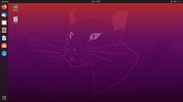
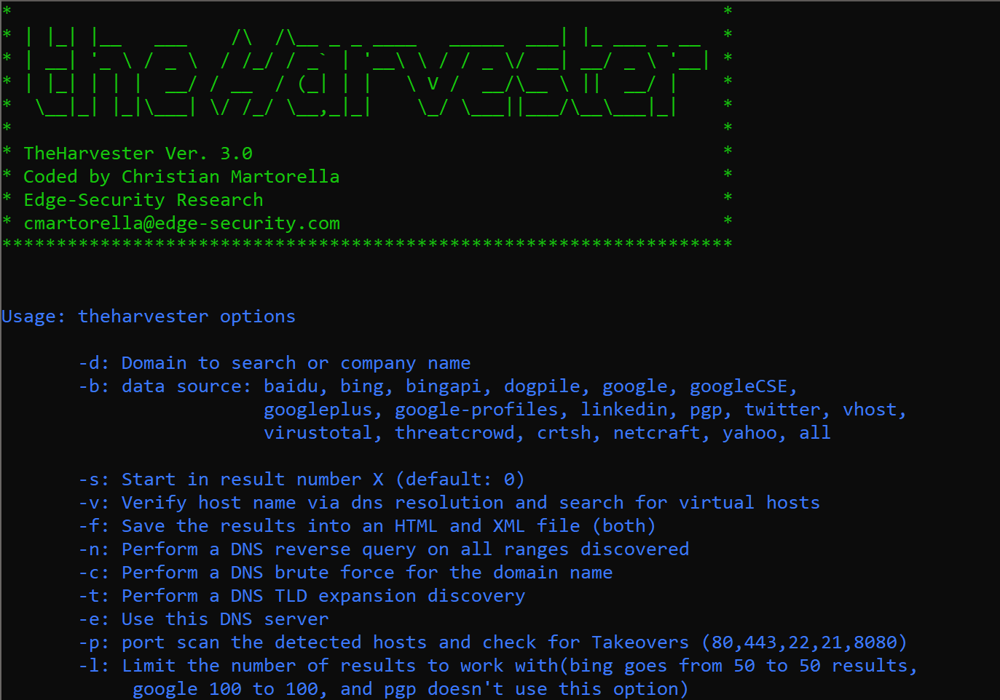
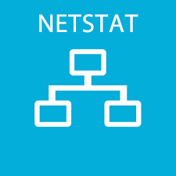

Know me better
I did my ACCA (Chartered Accountancy) right after my high school.
Regarding my professional life, I started as a banking intern and then moved my way upwards to
Audit Associate. There, I learnt a lot about financial aspects of a company.
After completing my studies, I went and worked as a Business Development Officer in a software company,
which also happened to be Amazon Web Service's advance partner.
I learnt about cloud computing and how it has changed the world as a whole.
This experience ignited the desire to work in a tech field and emerge myself into IT.
And here I am showcasing my projects.
I have been quite busy the last few days since I have been playing around with my Ubuntu Operating System.
I did SSH and FTP between my Windows and Ubuntu which are both in my LAN.... and let me say, it felt "AMAZING"
After that, I installed LAMP.

Do you have an old laptop that you've discarded in some corner of your room?
Well, I had one, and I have made the best of it...and from some random corner it has found its place to my workspace.
Network Mapped (Nmap) is a network scanning and host detection tool that is very useful during several steps of penetration testing.
It is not limited to merely gathering information and enumeration, but is also powerful utility that can be used as a vulnerability detector or a security scanner.
Nmap is a multipurpose tool, and it can be run on many different operating systems including Windows, Linux, BSD, and Mac.

theHarvester is a neat information-gathering tool used by both ethical and non-ethical
hackers to scrape up emails, subdomains, hosts, employee names, open ports, and banners from different public sources.
Linux is an operating system just like Windows and Mac OS. But Linux also is different from other operating
systems in many important ways.
First, and perhaps most importantly, Linux is open source software.
The code used to create Linux is free and available to the public to view, edit, and—for users with the appropriate skills—to contribute to.
here are many distributions of Linux, which include different software options.
This means that Linux is incredibly customizable.
Linux users also can choose core components, such as which system displays graphics, and other user-interface components.

Linux file system is generally a built-in layer of a Linux operating system used to handle the positioning of your data on the storage.
It helps to arrange the file on the disk storage.
It manages the file name, file size, creation date, and much more information about a file.
Without it, the system cannot knows which file starts from where and ends where.
Almost any useful work that one would want to do with a Linux system requires a network interface. Whether you want to browse the web, watch YouTube, stream video, audio or files?
It’s all done over the network interface.
Linux can support multiple network devices. The device names are numbered and begin at zero and count upwards. For example, a computer running two ethernet cards will have two devices labeled /dev/eth0 and /dev/eth1.

Netstat is a common command line TCP/IP networking utility.
It provides information and statistics about protocols in use and current TCP/IP network connections.